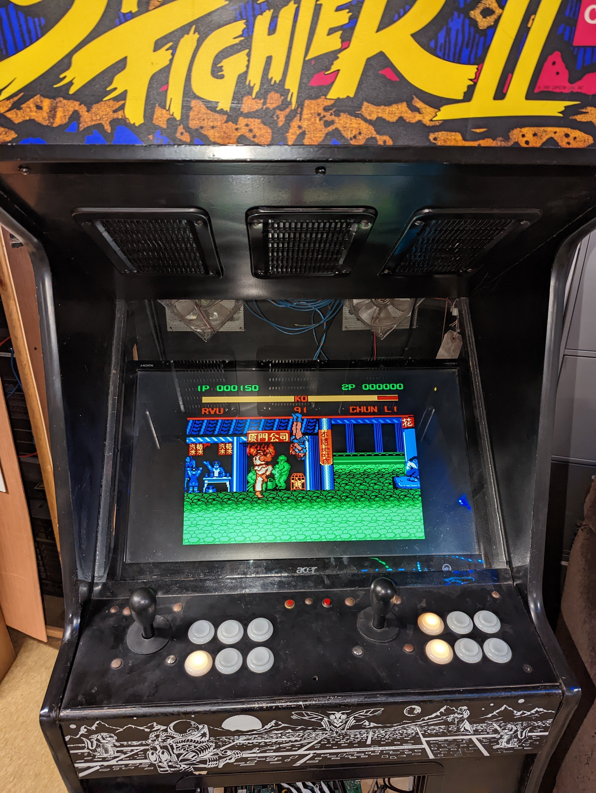
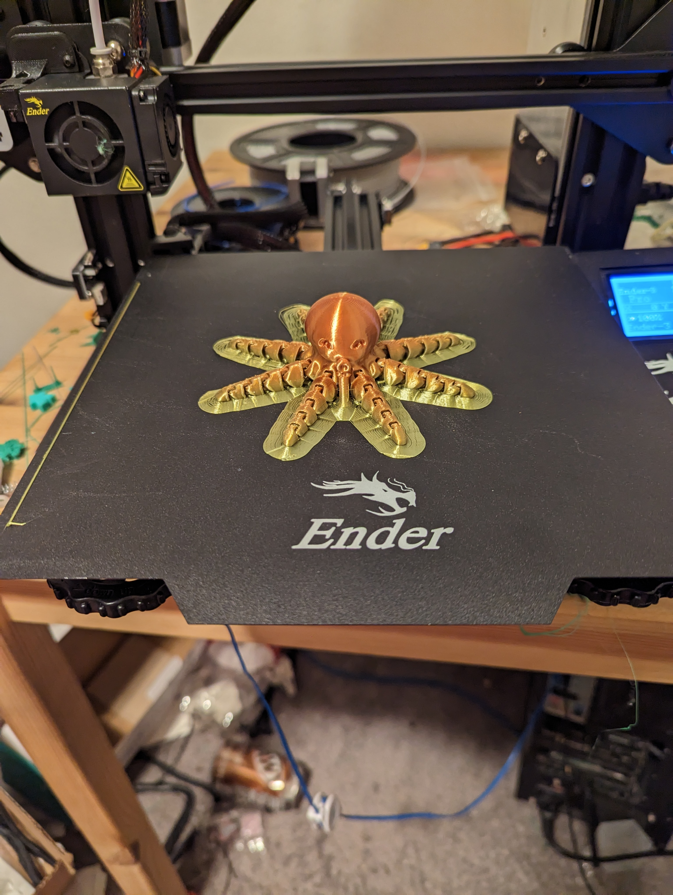
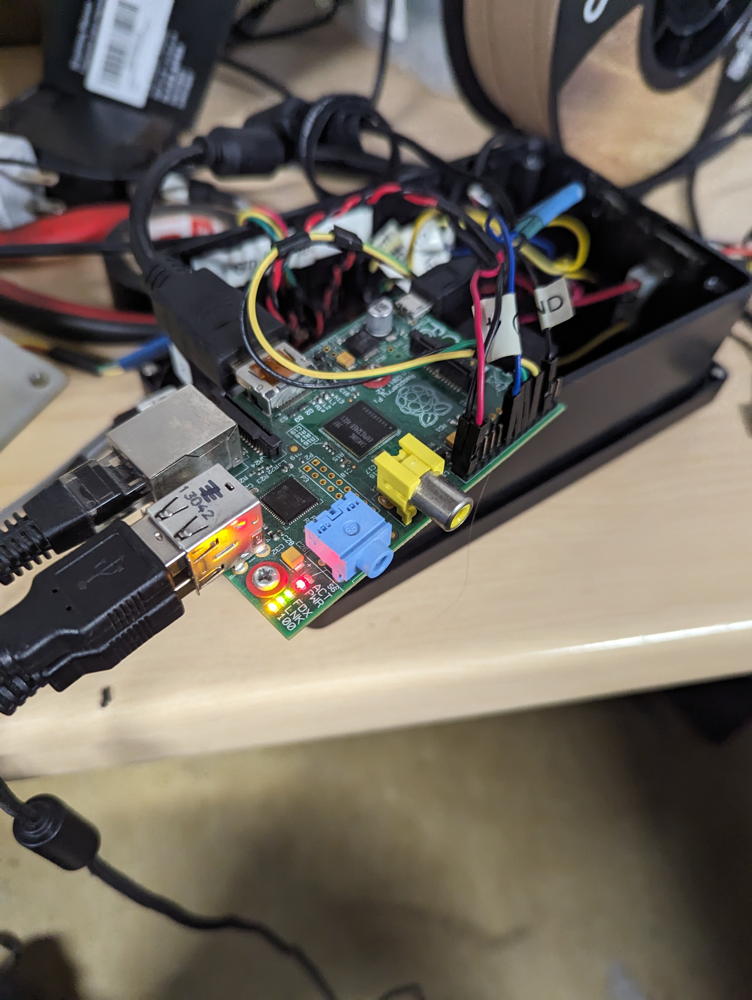
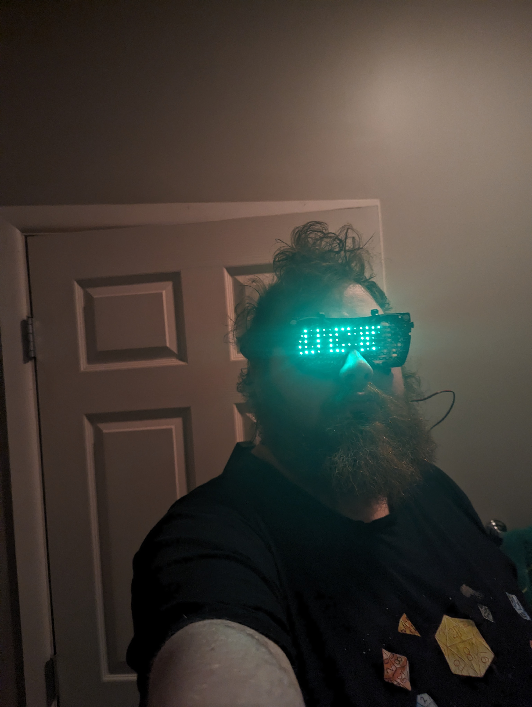

Specializing in embedded systems, automation, optimization, and teaching the next generation of developers.
I'm Brandon Barnes, a programmer and IT professional with experience in embedded systems, automation, CAN bus programming, and teaching computer science fundamentals. I enjoy solving complex problems, optimizing systems, and building tools that make life easier for others.
May 2025 – Present
June 2022 – November 2023
June 2021 – August 2021

Arcade Rebuild – reusing an old arcade cabinet with modern emulators for WMU computer club

3D Printer Modding – Repairs and custom modifications

Self‑Hosted IoT – Local Home Assistant automation

LED Matrix Glasses – Custom wearable display project